2110B26 MANUAL GEARBOX (6 speed) and differential - Dismantling and reassembly - Washing components - Replacing synchronizers and internal controls, if necessary
- Path
- Procedures > 21 GEARBOX > 2110 MANUAL GEARBOX AND DIFFERENTIAL > 2110B MANUAL GEARBOX AND DIFFERENTIAL COMPONENTS AND SYNCHRONIZERS > 2110B26 MANUAL GEARBOX (6 speed) and differential - Dismantling and reassembly - Washing components - Replacing synchronizers and internal controls, if necessary
- Kind
- repair procedure (removal / refitting; the operation number is the code)
- Applies to
- engines: 2.0 TB, 2.4 20V, 2.4 JTD 10V, 2.4 JTD 20V; all production periods
- Interactive page
- https://sloeber94.github.io/elrnDB-lThss/en/#/485588
Applies to: engines: 2.0 TB, 2.4 20V, 2.4 JTD 10V, 2.4 JTD 20V; all production periods
 Removing
Removing
 Refitting
Refitting1. Release the gearbox and differential (1a) from the hydraulic jack (1b) and from the tool (1c) used for removing-refitting it from the vehicle.
 | Description | Code | Function |
|---|---|---|---|
1c | Support | 1.870.644.001 | Gearbox support bracket whilst overhauling |
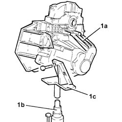
Applies to: engines: 2.0 TB, 2.4 20V, 2.4 JTD 10V, 2.4 JTD 20V; all production periods
1. Fit the gearbox and differential (1a) on the overhaul stand using the tool (1b).
| Description | Code | Function |
|---|---|---|---|
1b | Support | 1.871.001.014 | Gearbox support whilst overhauling |
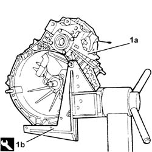
Applies to: engines: 2.0 TB, 2.4 20V, 2.4 JTD 10V, 2.4 JTD 20V; all production periods
1. Remove the left differential internal driveshaft (1a) using the tools (1b) and (1c).
| Description | Code | Function |
|---|---|---|---|
1b | Flange | 1.847.017.004 | Extracting left differential internal driveshaft |
| Description | Code | Function |
|---|---|---|---|
1c | Mallet | 1.840.206.001 | Extracting left differential internal driveshaft |
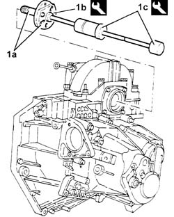
Applies to: engines: 2.0 TB, 2.4 20V, 2.4 JTD 10V, 2.4 JTD 20V; all production periods
1. Undo the bolts (1a) and remove the flanges on the differential (1b) complete with seals.
2. Remove the scraper ring.
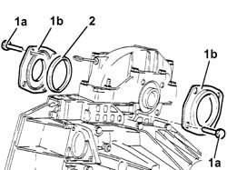
Applies to: engines: 2.0 TB, 2.4 20V, 2.4 JTD 10V, 2.4 JTD 20V; all production periods
1. Undo the bolts (1a) and remove the differential internal casing support (1b).
2. Remove the differential.
3. Remove the differential bearing outer races.
4. Remove the magnet.
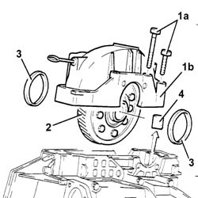
Applies to: engines: 2.0 TB, 2.4 20V, 2.4 JTD 10V, 2.4 JTD 20V; all production periods
1. Undo the reverse shaft bolt.
2. Undo the bolts (2a) and remove the gearbox casing (2b).
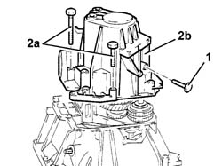
Applies to: engines: 2.0 TB, 2.4 20V, 2.4 JTD 10V, 2.4 JTD 20V; all production periods
1. Undo the bolts (1a) and (1b).
2. Release the 5-6 th speed control rod from the reverse fork and the 5 th speed selector.
3. Release the 5-6th speed fork from the control rod.
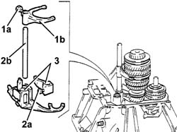
Applies to: engines: 2.0 TB, 2.4 20V, 2.4 JTD 10V, 2.4 JTD 20V; all production periods
1. Simultaneously remove the main shaft, layshaft, reverse shaft and 1st, 2nd, 3rd and 4th speed fork assemblies.
- Separate the forks from the rods.
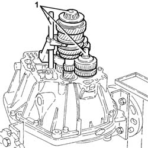
Applies to: engines: 2.0 TB, 2.4 20V, 2.4 JTD 10V, 2.4 JTD 20V; all production periods
1. Undo the bolts (1a) and remove the clutch actuator main shaft cover (1b).
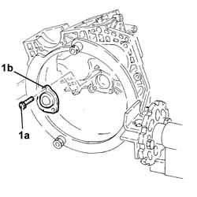
Applies to: engines: 2.0 TB, 2.4 20V, 2.4 JTD 10V, 2.4 JTD 20V; all production periods
1. Remove the main shaft rear bearing outer race (1a) using tools (1b) and (1c).
| Description | Code | Function |
|---|---|---|---|
1b | Extractor/Fitting tool | 1.870.655.000 | Extracting main shaft rear bearing outer race |
| Description | Code | Function |
|---|---|---|---|
1c | Mallet | 1.840.206.001 | Extracting main shaft rear bearing outer race |
2. Remove the main shaft scraper ring from the gearbox casing.
3. Remove the lubrication duct.
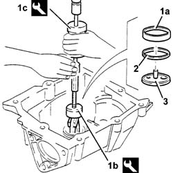
Applies to: engines: 2.0 TB, 2.4 20V, 2.4 JTD 10V, 2.4 JTD 20V; all production periods
1. Remove the layshaft rear bearing outer race (1a) using tools (1b) and (1c).
| Description | Code | Function |
|---|---|---|---|
1b | Extractor/Fitting tool | 1.870.655.000 | Extracting main shaft rear bearing outer race |
| Description | Code | Function |
|---|---|---|---|
1c | Mallet | 1.840.206.001 | Extracting layshaft rear bearing outer race |
2. Remove the layshaft scraper ring.
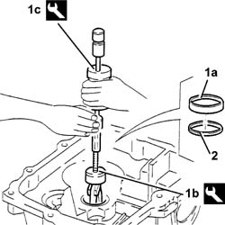
Applies to: engines: 2.0 TB, 2.4 20V, 2.4 JTD 10V, 2.4 JTD 20V; all production periods
- Proceed with dismantling the layshaft following the instructions given below.
1. Check that the opening between the gear teeth and the synchronizer ring support planes is within the recommended values at three points.
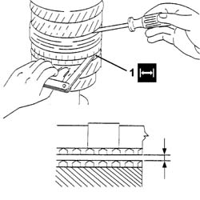
Applies to: engines: 2.0 TB, 2.4 20V, 2.4 JTD 10V, 2.4 JTD 20V; all production periods
1. Remove the rear bearing (1a), the 6 th speed driven gear (1b), using a hydraulic press, the support (1c) and half rings (1d) and a suitable drift (1e).
| Description | Code | Function |
|---|---|---|---|
1c | Half-rings support | 1.846.017.001 | Extracting 6th speed rear bearing and driven gear |
| Description | Code | Function |
|---|---|---|---|
1d | Half-rings | 1.870.676.000 | Extracting 6th speed rear bearing and driven gear |
2. Remove the spacer.
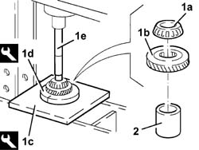
Applies to: engines: 2.0 TB, 2.4 20V, 2.4 JTD 10V, 2.4 JTD 20V; all production periods
1. Remove the 5th speed driven gear (1a) and the 4th speed driven gear (1b) using a hydraulic press, the half plate (1c) and half rings (1d).
| Description | Code | Function |
|---|---|---|---|
1c | Half-rings support | 1.846.017.001 | Extracting 4-5th speed driven gear |
| Description | Code | Function |
|---|---|---|---|
1d | Half-rings | 1.870.675.000 | Extracting 4-5th speed driven gear |
2. Remove the spacer.
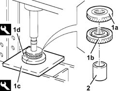
Applies to: engines: 2.0 TB, 2.4 20V, 2.4 JTD 10V, 2.4 JTD 20V; all production periods
1. Remove the 3rd speed driven gear (1a) and the 2nd speed driven gear (1b) using a hydraulic press and the half plate (1c).
| Description | Code | Function |
|---|---|---|---|
1c | Plate | 1.874.290.000 | Extracting 3rd-2nd speed driven gear |
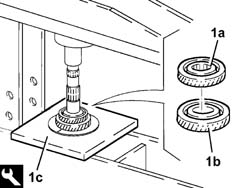
Applies to: engines: 2.0 TB, 2.4 20V, 2.4 JTD 10V, 2.4 JTD 20V; all production periods
1. Remove the needle bearing for the 2nd speed driven gear.
2. Remove the triple cone synchronizer and 1st and 2 nd speed.
3. Remove the engagement sliding sleeve for 1 st speed, 2nd speed and reverse (3a) and the spring/roller (3b).
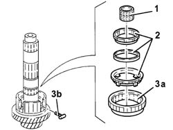
Applies to: engines: 2.0 TB, 2.4 20V, 2.4 JTD 10V, 2.4 JTD 20V; all production periods
1. Remove the circlip using suitable pliers.
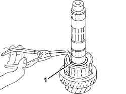
Applies to: engines: 2.0 TB, 2.4 20V, 2.4 JTD 10V, 2.4 JTD 20V; all production periods
1. Remove the hub for the 1st speed, 2nd speed and reverse sliding sleeve (1a), the 1st speed triple cone synchronizer (1b), the 1st speed driven gear (1c), using a hydraulic press and the 1st speed half plate (1d).
| Description | Code | Function |
|---|---|---|---|
1d | Half plate | 1.874.290.000 | Dismantling layshaft |
2. Remove the needle bearing for the 1nd speed driven gear.
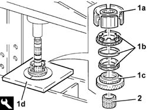
Applies to: engines: 2.0 TB, 2.4 20V, 2.4 JTD 10V, 2.4 JTD 20V; all production periods
1. Remove the circlip using suitable pliers.
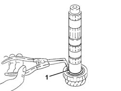
Applies to: engines: 2.0 TB, 2.4 20V, 2.4 JTD 10V, 2.4 JTD 20V; all production periods
1. Remove the front bearing (1a) using a hydraulic press, a suitable plate (1b), the reaction base (1c) with the outer race (1d) for the bearing in question inside.
| Description | Code | Function |
|---|---|---|---|
1c | Reaction base | 1.870.660.000 | Dismantling layshaft |
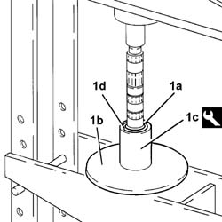
Applies to: engines: 2.0 TB, 2.4 20V, 2.4 JTD 10V, 2.4 JTD 20V; all production periods
- Proceed with dismantling the reverse shaft following the instructions given below.
1. Remove the reverse drive gear - reverse synchronizer assembly from the reverse shaft.
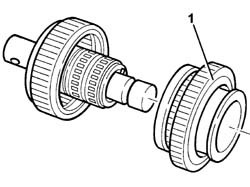
Applies to: engines: 2.0 TB, 2.4 20V, 2.4 JTD 10V, 2.4 JTD 20V; all production periods
1. Remove the circlip using suitable pliers.
2. Remove the reverse gear synchronizer.
3. Remove the spring (3a) from the reverse drive gear (3b).
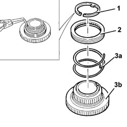
Applies to: engines: 2.0 TB, 2.4 20V, 2.4 JTD 10V, 2.4 JTD 20V; all production periods
1. Remove the O-ring.
2. Remove the pin.
3. Remove the needle bearing for the reverse drive gear (3a) complete with bush (3b).
4. Remove the reverse driven gear.
5. Remove the needle bearing for the reverse driven gear.
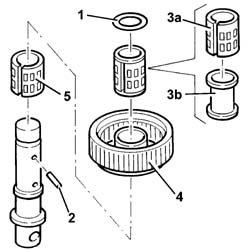
Applies to: engines: 2.0 TB, 2.4 20V, 2.4 JTD 10V, 2.4 JTD 20V; all production periods
Refitting
Removing- Proceed with reassembling the reverse shaft following the instructions given below.
1. Fit the needle bearing for the reverse drive gear (1a) on the reverse shaft (1b).
2. Fit the reverse driven gear.
3. Fit the needle bearing for the reverse drive gear complete with bush.
4. Fit the pin.
5. Fit a new O-Ring.
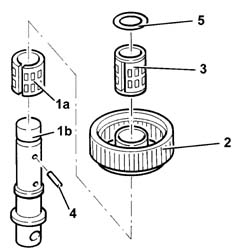
Applies to: engines: 2.0 TB, 2.4 20V, 2.4 JTD 10V, 2.4 JTD 20V; all production periods
1. Fit the spring (1a) on the reverse drive gear (1b).
2. Fit the reverse gear synchronizer.
3. Fit the circlip.
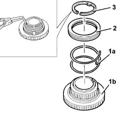
Applies to: engines: 2.0 TB, 2.4 20V, 2.4 JTD 10V, 2.4 JTD 20V; all production periods
- Fit the reverse drive gear - reverse synchronizer assembly on the reverse shaft.
- Proceed with reassembling the main shaft following the instructions given below.
 | Description | Qty. | Component | Type | Classification |
|---|---|---|---|---|---|
. | TUTELA ZC 75 SEMI SYNTH | - | MANUAL GEARBOX/DIFFERENTIAL | Oil | SAE 75W90 - API GL 5 |
1. Fit the front bearing (1a) using a hydraulic press, a suitable plate (1b), the fitting tool (1c) and the half rings (1d).
| Description | Code | Function |
|---|---|---|---|
1c | Extractor/Fitting tool | 1.870.658.000 | Fitting front bearing |
| Description | Code | Function |
|---|---|---|---|
1d | Half-rings | 1.845.063.000 | Fitting front bearing |
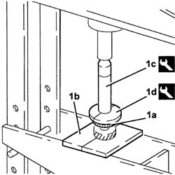
Applies to: engines: 2.0 TB, 2.4 20V, 2.4 JTD 10V, 2.4 JTD 20V; all production periods
1. Using a feeler gauge, measure the housing for the front bearing circlip to be fitted.
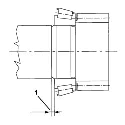
Applies to: engines: 2.0 TB, 2.4 20V, 2.4 JTD 10V, 2.4 JTD 20V; all production periods
1. Fit a new front bearing circlip.
2. Fit the needle bearing for the 1st speed driven gear.
3. Fit the 1st speed driven gear.
4. Fit the 1st speed triple cone synchronizer.
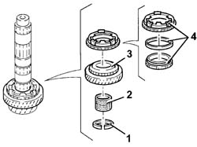
Applies to: engines: 2.0 TB, 2.4 20V, 2.4 JTD 10V, 2.4 JTD 20V; all production periods
1. Fit the hub for the 1st speed, 2nd speed and reverse sliding sleeve (1a) using a hydraulic press, a suitable plate (1b) and the fitting tool (1c).
| Description | Code | Function |
|---|---|---|---|
1c | Extractor/Fitting tool | 1.870.658.000 | Reassembling layshaft |
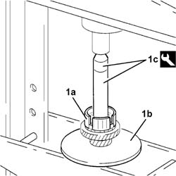
Applies to: engines: 2.0 TB, 2.4 20V, 2.4 JTD 10V, 2.4 JTD 20V; all production periods
1. Fit a new circlip.
2. Fit the 1st speed, 2nd speed and reverse sliding sleeve so that the internal references are aligned with the springs.
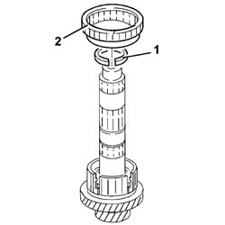
Applies to: engines: 2.0 TB, 2.4 20V, 2.4 JTD 10V, 2.4 JTD 20V; all production periods
1. Fit the 1a spring/roller on the hub for the 1st speed, 2nd speed and reverse sliding sleeve.
2. Fit the needle bearing for the 2st speed driven gear.
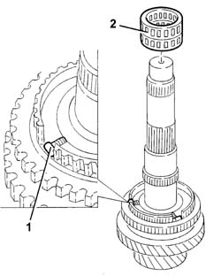
Applies to: engines: 2.0 TB, 2.4 20V, 2.4 JTD 10V, 2.4 JTD 20V; all production periods
1. Fit the triple cone synchronizer (1a) on the 2nd speed driven gear (1b).
2. Fit the assembly constructed as described in the previous stage on the layshaft.
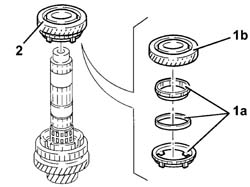
Applies to: engines: 2.0 TB, 2.4 20V, 2.4 JTD 10V, 2.4 JTD 20V; all production periods
1. Fit the 3rd speed driven gear (1a) using a hydraulic press, a suitable plate (1b) and the fitting tool (1c).
| Description | Code | Function |
|---|---|---|---|
1c | Extractor/Fitting tool | 1.870.658.000 | Reassembling layshaft |
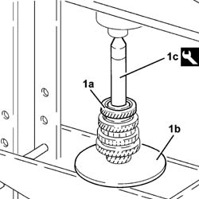
Applies to: engines: 2.0 TB, 2.4 20V, 2.4 JTD 10V, 2.4 JTD 20V; all production periods
1. Fit the spacer.
- Heat the 4tht speed driven gear to 120 °C.
2. Fit the 4th speed driven gear (2a) using a hydraulic press, a suitable plate (2b) and the top part of the tool (2c).
| Description | Code | Function |
|---|---|---|---|
2c | Extractor/Fitting tool | 1.870.658.000 | Reassembling layshaft |
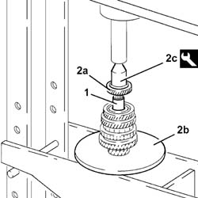
Applies to: engines: 2.0 TB, 2.4 20V, 2.4 JTD 10V, 2.4 JTD 20V; all production periods
1. Fit the 5th speed driven gear (1a) using a hydraulic press, a suitable plate (1b) and the top part of the tool (1c).
| Description | Code | Function |
|---|---|---|---|
1c | Extractor/Fitting tool | 1.870.658.000 | Reassembling layshaft |
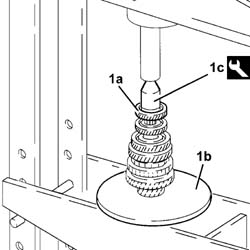
Applies to: engines: 2.0 TB, 2.4 20V, 2.4 JTD 10V, 2.4 JTD 20V; all production periods
1. Fit the 6th speed driven gear (1a) using a hydraulic press, a suitable plate (1b) and the top part of the tool (1c).
| Description | Code | Function |
|---|---|---|---|
1c | Extractor/Fitting tool | 1.870.658.000 | Reassembling layshaft |
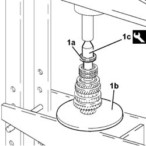
Applies to: engines: 2.0 TB, 2.4 20V, 2.4 JTD 10V, 2.4 JTD 20V; all production periods
1. Fit the rear bearing (1a) using a hydraulic press, a suitable plate (1b) and the fitting tool (1c).
| Description | Code | Function |
|---|---|---|---|
1c | Fitting tool | 1.870.659.000, | Reassembling layshaft |
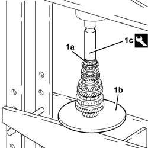
Applies to: engines: 2.0 TB, 2.4 20V, 2.4 JTD 10V, 2.4 JTD 20V; all production periods
- Fit the main and layshafts simultaneously in their housings.
- If the main shaft, bellhousing, gearbox casing, layshaft rear bearing, layshaft assembly, 3rd, 4th,5th and 6th speed driven gears are being replaced, determine the size of the scraper shims for the main and layshaft bearing pre-loading following the instructions given below.
- Thoroughly clean the bearing and gearbox casing support surfaces.
1. Position the two gauges in the rear bearing seats in the gearbox casing.
| Description | Code | Function |
|---|---|---|---|
1 | Gauges | 1.870.648.000 | Determining main and layshaft bearing pre-loading |
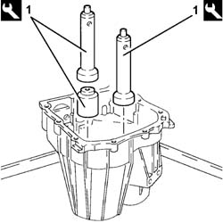
Applies to: engines: 2.0 TB, 2.4 20V, 2.4 JTD 10V, 2.4 JTD 20V; all production periods
1. Fit the reference crossmember on the gearbox casing.
| Description | Code | Function |
|---|---|---|---|
1 | Reference crossmember | 1.870.649.000 | Determining main and layshaft bearing pre-loading |
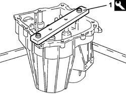
Applies to: engines: 2.0 TB, 2.4 20V, 2.4 JTD 10V, 2.4 JTD 20V; all production periods
1. Place the two cylinders for the gauges in contact (without force) with the lower surface of the reference crossmember using a screwdriver and working via the two special openings
2. Lock the two cylinders using the bolts.
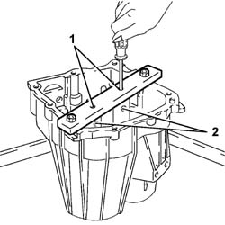
Applies to: engines: 2.0 TB, 2.4 20V, 2.4 JTD 10V, 2.4 JTD 20V; all production periods
- Remove the reference crossmember and the gauges from the gearbox casing.
1. Fit the gauges on the plate
| Description | Code | Function |
|---|---|---|---|
1 | Gauges | 1.870.648.000 | Determining main and layshaft bearing pre-loading |
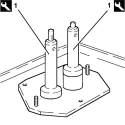
Applies to: engines: 2.0 TB, 2.4 20V, 2.4 JTD 10V, 2.4 JTD 20V; all production periods
1. Fit the tool for checking the bearing pre-loading (1a) with the bolts (1b), the spacer (1c), the disc (1d) and the centering bush (1e) specially designed for 6 speed gearboxes.
| Description | Code | Function |
|---|---|---|---|
1a | Support | 1.870.647.000 | Determining main and layshaft bearing pre-loading |
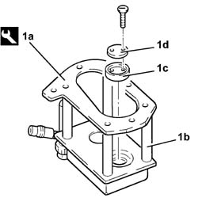
Applies to: engines: 2.0 TB, 2.4 20V, 2.4 JTD 10V, 2.4 JTD 20V; all production periods
1. Match the support for determining the bearing pre-loading kitted out in this way with the base plate complete with gauges.
2. Connect the tool to a compressed air line and supply it with a pressure of 0.5 bar so that the two actuators are in contact with the gauges.
3. Fit two dial gauges on the tool and zero them with a pre-loading of 3 mm (see reference X in the example for calculating the scraper shims).
| Description | Code | Function |
|---|---|---|---|
3 | Dial gauges | 1.895.881.000 | Determining main and layshaft bearing pre-loading |
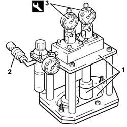
Applies to: engines: 2.0 TB, 2.4 20V, 2.4 JTD 10V, 2.4 JTD 20V; all production periods
- Remove the support for determining the bearing pre-loading from the base plate complete with gauges.
1. Remove the disc.
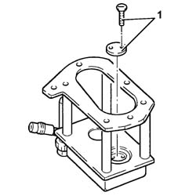
Applies to: engines: 2.0 TB, 2.4 20V, 2.4 JTD 10V, 2.4 JTD 20V; all production periods
- Fit the bearing races on the main and layshafts.
1. Position the support for determining the bearing pre-loading on the gearbox casing support and tighten it to torque.
 | Value - daNm | Fastening | Component | Ø |
|---|---|---|---|---|
. | 3.1 - 4.5 | Bolt | MANUAL GEARBOX (6 speed | - |
2. Connect the equipment to an air line and supply it at a pressure of 4 bar.
3. Rotate the main and layshafts through ten revolutions using the tool (3a) and a suitable crank (3b).
| Description | Code | Function |
|---|---|---|---|
3a | Bush | 1.870.652.000 | Main shaft rotation |
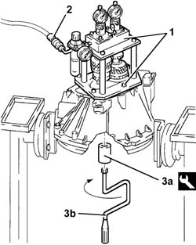
Applies to: engines: 2.0 TB, 2.4 20V, 2.4 JTD 10V, 2.4 JTD 20V; all production periods
- Measure the movements in relation to the layshaft and the main shaft using the dial gauges (see reference Y in the example for calculating the scraper shims).
- Add 0.15 mm to the difference between X and Y for the layshaft to obtain the necessary distance for selecting the size of the scraper ring to be used.
- Subtract 0.10 mm from the difference between X and Y for the main shaft to obtain the necessary distance for selecting the size of the scraper ring to be used.
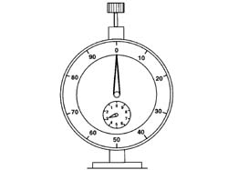
Applies to: engines: 2.0 TB, 2.4 20V, 2.4 JTD 10V, 2.4 JTD 20V; all production periods
- Reference distance Y (shafts)
- To simplify the situation, let us assume that the difference measured was 0.9 mm for both the layshaft and the main shaft.
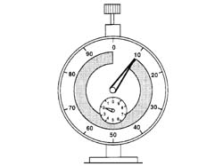
Applies to: engines: 2.0 TB, 2.4 20V, 2.4 JTD 10V, 2.4 JTD 20V; all production periods
- Calculation of layshaft scraper shim.
- 0.15 mm must be added to the difference measured between X and Y; to understand this more easily, immagine that the pointer has to move to the test distance of 0.15 mm, i.e.: 0.9 + 0.15 = 1.05 mm (scraper shim).
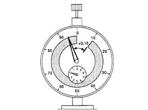
Applies to: engines: 2.0 TB, 2.4 20V, 2.4 JTD 10V, 2.4 JTD 20V; all production periods
- Calculation of main shaft scraper shim.
- 0.10 mm must be subtracted from the difference measured between X and Y; to understand this more easily, immagine that the pointer has to move to the test distance of 0.10 mm, i.e.: 0.9 -0.10 = 0.80 mm (scraper shim).
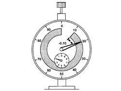
Applies to: engines: 2.0 TB, 2.4 20V, 2.4 JTD 10V, 2.4 JTD 20V; all production periods
- Remove the tool for determining the bearing pre-loading from the gearbox casing support.
1. Fit the lubrication duct.
2. Fit the main shaft scraper ring of the size calculated.
3. Fit the main shaft rear bearing outer race (3a) using a hydraulic press, a suitable plate (3b) and the fitting tool (3c).
| Description | Code | Function |
|---|---|---|---|
3c | Fitting tool | 1.874.365.000 | Fitting main shaft rear bearing outer race |
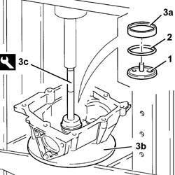
Applies to: engines: 2.0 TB, 2.4 20V, 2.4 JTD 10V, 2.4 JTD 20V; all production periods
1. Fit the layshaft scraper ring of the size calculated.
2. Fit the main shaft rear bearing outer race (2a) using a hydraulic press, a suitable plate (2b) and the fitting tool (2c).
| Description | Code | Function |
|---|---|---|---|
2c | Fitting tool | 1.874.365.000 | Fitting layshaft rear bearing outer race |
Applies to: engines: 2.0 TB, 2.4 20V, 2.4 JTD 10V, 2.4 JTD 20V; all production periods
- Fit the reverse shaft and 1st, 2nd, 3rd and 4th speed forks and control rods.
1. Lift up the reverse driven gear and check that the reverse shaft pin is correctly positioned.
Applies to: engines: 2.0 TB, 2.4 20V, 2.4 JTD 10V, 2.4 JTD 20V; all production periods
1. Fit the 5-6th speed and reverse control forks.
2. Fit the 5-6th speed and reverse control rod (2a) and secure it tightening the bolt (2b) to the recommended torque.
| Value - daNm | Fastening | Component | Ø |
|---|---|---|---|---|
2b | 2.3 - 3.3 | Bolt | 5TH SPEED CONTROL ROD | M8 |
3. Fit the 5th speed control fork (3a) and secure it tightening the bolt (3b) to the recommended torque.
| Value - daNm | Fastening | Component | Ø |
|---|---|---|---|---|
3b | 2.3 - 3.3 | Bolt | 5TH SPEED CONTROL FORK | M8 |
Applies to: engines: 2.0 TB, 2.4 20V, 2.4 JTD 10V, 2.4 JTD 20V; all production periods
- Apply the recommended sealant to the entire surface matched with the gearbox casing.
| Description | Qty. | Component | Type | Classification |
|---|---|---|---|---|---|
. | Loctite 510 | - | GEARBOX COMPONENTS | Sealant | - |
1. Fit the gearbox casing (1a) and secure it tightening the bolts (1b) to the recommended torque.
| Value - daNm | Fastening | Component | Ø |
|---|---|---|---|---|
1b | 3.1 - 4.5 | Bolt | GEARBOX COMPONENTS | M9 |
2. Tighten the reverse shaft bolt to the recommended torque.
| Value - daNm | Fastening | Component | Ø |
|---|---|---|---|---|
2 | 4.6 - 6.6 | Bolt | REVERSE GEAR SHAFT | M10 |
Applies to: engines: 2.0 TB, 2.4 20V, 2.4 JTD 10V, 2.4 JTD 20V; all production periods
- Fit the magnet.
- Fit the differential in its housing complete with bearing outer races.
- Apply the recommended sealant to the entire surface matched with the differential internal housing support.
| Description | Qty. | Component | Type | Classification |
|---|---|---|---|---|---|
. | Loctite 510 | - | DIFFERENTIAL INTERNAL CASING SUPPORT | Sealant | - |
1. Fit the differential internal housing support (1a) and secure it tightening the bolts (1b) to the recommended torque.
| Value - daNm | Fastening | Component | Ø |
|---|---|---|---|---|
1a | 4.6 - 6.6 | Bolt | DIFFERENTIAL INTERNAL CASING SUPPORT | M10 |
| Value - daNm | Fastening | Component | Ø |
|---|---|---|---|---|
1b | 2.3 - 3.3 | Bolt | DIFFERENTIAL INTERNAL CASING SUPPORT | M8 |
Applies to: engines: 2.0 TB, 2.4 20V, 2.4 JTD 10V, 2.4 JTD 20V; all production periods
1. Fit a new seal (1a) on the flange (1b) using the tools (1c) and (1d) and secure it to the gearbox side differential using the bolts (1e).
| Description | Code | Function |
|---|---|---|---|
1c | Fitting tool | 1.870.597.000 | Fitting seal |
| Description | Code | Function |
|---|---|---|---|
1d | Grips | 1.870.007.000 | Fitting seal |
| Value - daNm | Fastening | Component | Ø |
|---|---|---|---|---|
1e | 2.3 - 3.3 | Bolt | FLANGES ON DIFFERENTIAL | M8 |
Applies to: engines: 2.0 TB, 2.4 20V, 2.4 JTD 10V, 2.4 JTD 20V; all production periods
- Using a suitable drift, move the pinion side tapered bearing outer race nearer.
1. Position the tool complete with dial gauge on the surface of the engine side differential and zero the dial guage with a pre-loading of 1 mm.
| Description | Code | Function |
|---|---|---|---|
1 | Support | 1.895.655.000 | Determining thickness of differential bearing scraper rings |
Applies to: engines: 2.0 TB, 2.4 20V, 2.4 JTD 10V, 2.4 JTD 20V; all production periods
1. Position the tool (1a) complete with dial gauge on the engine side differential flange (1b) and measure the difference.
| Description | Code | Function |
|---|---|---|---|
1a | Support | 1.895.655.000 | Determining thickness of differential bearing scraper rings |
Applies to: engines: 2.0 TB, 2.4 20V, 2.4 JTD 10V, 2.4 JTD 20V; all production periods
- Calculate the size of the differential bearign pre-loading scraper ring adding 0.12 mm to the difference measured.
1. Place the scraper ring or rings of the same size or the next (larger) size to that calculated for the differential bearing pre-loading in the housing.
2. Fit a new seal (2a) on the flange (2b) using the tools (2c) and (2d) and secure it to the gearbox side differential using the bolts (2e).
| Description | Code | Function |
|---|---|---|---|
2c | Fitting tool | 1.870.597.000 | Fitting seal |
| Description | Code | Function |
|---|---|---|---|
2d | Grips | 1.870.007.000 | Fitting seal |
| Value - daNm | Fastening | Component | Ø |
|---|---|---|---|---|
2e | 2.3 - 3.3 | Bolt | FLANGES ON DIFFERENTIAL | M8 |
3. Fit the clutch actuator (3a) complete with oil seal panel to the main shaft securing it by tightening the bolts (3b) to the recommended torque.
| Value - daNm | Fastening | Component | Ø |
|---|---|---|---|---|
3b | 2.3 - 3.3 | Bolt | CLUTCH CONTROL HYDRAULIC ACTIVATOR | M6 |
Applies to: engines: 2.0 TB, 2.4 20V, 2.4 JTD 10V, 2.4 JTD 20V; all production periods
- Fit the clutch engagement thrust bearing control fork pin.
- Fit the outer non-slip bush.
- Fit the left inner driveshaft.
- Undo the fastenings and remove the gearbox and differential from the tool.
| Description | Code | Function |
|---|---|---|---|
. | Support | 1.871.001.014 | Positioning gearbox and differential on overhaul stand |
- Remove the support tool from the overhaul stand and put it down.
- Position the gearbox and differential on the tool used for the removing-refitting from the vehicle.
Topics that link to this page (2)
- 2110B34 MANUAL GEARBOX (6 SPEED) AND DIFFERENTIAL - DISMANTLING AND REASSEMBLING - WASHING AND CHECKING COMPONENTS - REPLACING SYNCHRONIZERS, INTERNAL CONTROLS, SHAFTS AND BEARINGS, IF NECESSARY
- 2110D10 Differential INTERNAL CASING - R.R. with manual gearbox removed - Includes dismantling and reassembly of the gearbox